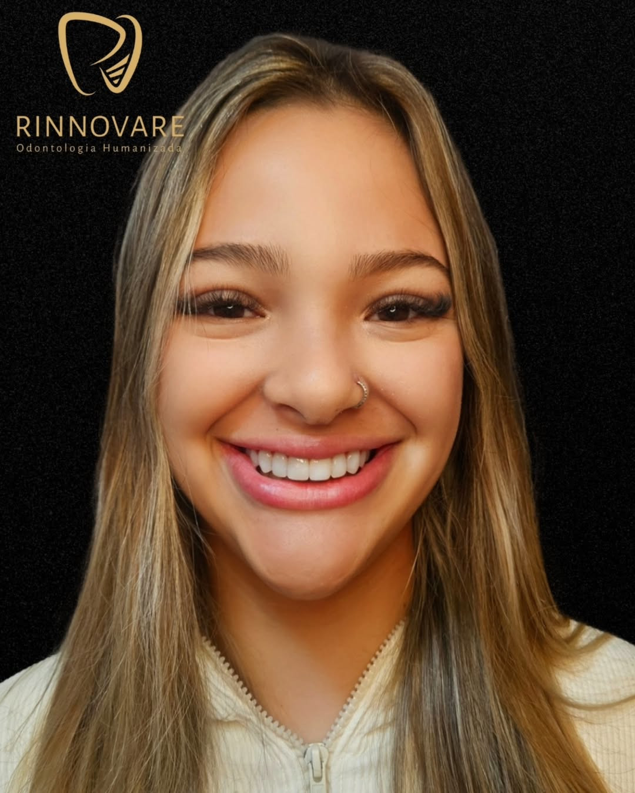

Galeria
Confira algumas fotos da nossa clínica e equipe.

Bem-vindo à nossa clínica dentária!
Aqui, cuidamos do seu sorriso com carinho e profissionalismo.
Realizamos a limpeza dental com profissionais qualificados e equipamentos de última geração.
A limpeza dental é essencial para manter a saúde bucal e prevenir doenças.
Realizamos a limpeza dental com profissionais qualificados e equipamentos de última geração. A limpeza dental é essencial para manter a saúde bucal e prevenir doenças, como cáries, gengivite e tártaro. Além de proporcionar um sorriso mais bonito e saudável, a profilaxia ajuda a manter o hálito fresco e evita complicações futuras. Agende sua consulta e invista no cuidado que seu sorriso merece!
Oferecemos clareamento dental seguro e eficaz para deixar seu sorriso mais branco e brilhante. Utilizamos técnicas modernas e produtos aprovados, garantindo resultados visíveis sem prejudicar a saúde dos seus dentes. O clareamento pode ser realizado tanto em consultório quanto em casa, sob orientação profissional, proporcionando conforto e praticidade. Recupere a confiança no seu sorriso e surpreenda-se com a diferença que um clareamento dental pode fazer na sua autoestima. Agende uma avaliação e saiba qual a melhor opção para você!
Tratamos cáries de forma rápida e indolor, garantindo a saúde do seu dente. Utilizamos técnicas modernas e materiais de alta qualidade para remover a cárie e restaurar a estrutura do dente, preservando ao máximo o tecido saudável. O tratamento é realizado com anestesia local, proporcionando conforto ao paciente durante todo o procedimento. Após o tratamento, orientamos sobre os cuidados necessários para evitar novas cáries, como higiene bucal adequada e alimentação equilibrada. Agende sua consulta e mantenha seu sorriso saudável!
Realizamos restaurações dentárias com materiais de alta qualidade para devolver a funcionalidade e estética do seu sorriso. Nossas restaurações são feitas com resinas compostas modernas, que se adaptam perfeitamente à cor natural dos dentes, proporcionando um resultado discreto e duradouro. O procedimento é rápido, seguro e visa preservar ao máximo a estrutura dental saudável. Após a restauração, orientamos sobre os cuidados necessários para garantir a longevidade do tratamento e manter seu sorriso sempre bonito. Agende uma avaliação e saiba como podemos recuperar a saúde e beleza dos seus dentes!
Tratamos gengivite com técnicas avançadas para garantir a saúde das suas gengivas. A gengivite é uma inflamação causada principalmente pelo acúmulo de placa bacteriana, podendo evoluir para problemas mais graves se não tratada adequadamente. Nosso tratamento inclui a remoção cuidadosa da placa e do tártaro, orientações de higiene bucal personalizada e acompanhamento regular para prevenir recidivas. Com atendimento humanizado e tecnologia moderna, ajudamos você a manter gengivas saudáveis, evitando sangramentos, mau hálito e perda dentária. Agende uma avaliação e cuide do seu sorriso desde a base!
Realizamos o tratamento de canal radicular com cuidado e precisão para salvar dentes comprometidos. O procedimento é indicado quando a polpa do dente está inflamada ou infectada, geralmente devido a cáries profundas ou traumas. Utilizamos técnicas modernas e anestesia local para garantir o máximo de conforto ao paciente durante todo o processo. Após a remoção da polpa comprometida, o canal é cuidadosamente limpo, desinfectado e preenchido com material biocompatível, preservando a estrutura dental e evitando a extração. Nossa equipe acompanha cada etapa do tratamento, orientando sobre os cuidados pós-procedimento para garantir a recuperação e a saúde do seu sorriso. Agende uma avaliação e saiba mais sobre como o tratamento de canal pode salvar seu dente e restaurar sua qualidade de vida!
Oferecemos próteses dentárias personalizadas para restaurar a sua mastigação e estética. Nossas próteses são confeccionadas com materiais de alta qualidade, proporcionando conforto, durabilidade e aparência natural. Trabalhamos com diferentes tipos de próteses, como próteses totais, parciais e sobre implantes, sempre buscando a melhor solução para cada paciente. O processo inclui avaliação detalhada, planejamento individualizado e acompanhamento em todas as etapas, garantindo adaptação perfeita e satisfação com o resultado. Recupere sua confiança ao sorrir, falar e se alimentar. Agende uma consulta para saber qual prótese é ideal para você!
Atendemos crianças com carinho e atenção, garantindo uma experiência positiva desde cedo. Nossa equipe é especializada em odontopediatria, utilizando técnicas lúdicas e abordagem humanizada para que os pequenos se sintam seguros e confortáveis durante o atendimento. Realizamos acompanhamento preventivo, aplicação de flúor, orientação sobre higiene bucal e tratamento de cáries infantis. O cuidado com a saúde bucal na infância é fundamental para o desenvolvimento de dentes fortes e saudáveis. Agende uma consulta e proporcione ao seu filho um sorriso saudável desde os primeiros anos de vida!
Tratamos doenças periodontais com técnicas avançadas para preservar a saúde das suas gengivas. A periodontia é responsável pelo diagnóstico, prevenção e tratamento de problemas que afetam os tecidos de suporte dos dentes, como gengivas e osso. Realizamos procedimentos como raspagem, alisamento radicular e acompanhamento clínico para controlar a progressão da doença periodontal, evitando a perda dentária. Nossa equipe orienta sobre a importância da higiene bucal adequada e realiza avaliações periódicas para garantir a saúde das gengivas. Com atendimento humanizado e tecnologia moderna, ajudamos você a manter um sorriso saudável e livre de complicações periodontais. Agende uma consulta para avaliação e cuide da base do seu sorriso!
Oferecemos tratamentos ortodônticos personalizados para corrigir problemas de alinhamento dental. Nossa equipe utiliza aparelhos modernos, incluindo opções estéticas como alinhadores transparentes, para proporcionar conforto e discrição durante o tratamento. A ortodontia não só melhora a aparência do sorriso, mas também contribui para a saúde bucal, facilitando a higienização e prevenindo problemas como cáries e doenças gengivais. Realizamos avaliação detalhada para indicar o melhor tipo de aparelho para cada paciente, acompanhando todo o processo até a obtenção de resultados satisfatórios. Agende uma consulta e descubra como podemos transformar o seu sorriso com a ortodontia!
Oferecemos uma ampla gama de serviços dentários para atender às suas necessidades. Nossa equipe está pronta para cuidar do seu sorriso com profissionalismo e carinho.
Agende uma consulta e venha nos conhecer!
Somos uma equipe de dentistas apaixonados por cuidar da saúde bucal. Nossa missão é proporcionar um atendimento de qualidade e conforto aos nossos pacientes.
Localizados no coração da cidade, oferecemos uma ampla gama de serviços dentários para todas as idades.
Confira algumas fotos da nossa clínica e equipe.
Veja o que nossos pacientes dizem sobre nós:
"Excelente atendimento! Me senti muito bem cuidada." - Maria S. 
"Profissionais atenciosos e competentes. Recomendo!" - João P.
Entre em contato conosco para agendar uma consulta ou esclarecer suas dúvidas.